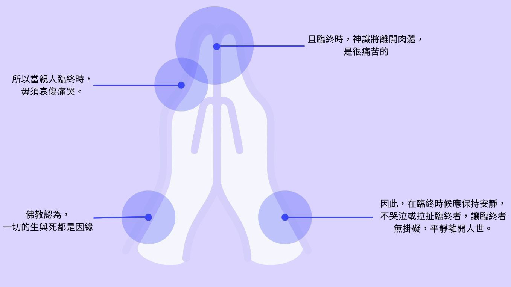

佛系生活知不知
死亡是另一期生命的開始？
哪有那麼好的事？
哪有那麼好的事？
臨終助念
就是幫助往生者堅定信念，在親人氣絕，神識尚未離去的8-12小時內，家屬應虔敬助念。

遺體安置
親人過世後，親人在旁助念，並靜置8-12小時後，待遺體冰冷時再移至殯儀館或自宅廳堂安置（入殮或冰存）。

豎靈
「豎靈」即為死者設立靈位。
做七與
法會
法會
「做七」和「法會」是大事，都是幫助亡者消業積德。
唯現今做法興盛，認為法會佛事就是
「助念」
入殮
遺體在沐浴、更衣、化妝後移置棺木入殮。
出殯與告別式
佛教在遺體出殯前仍舉行的奠祭儀式，與傳統喪禮相同，先由子孫，後按與死者親疏關係之宗親、姻親先後奠祭，是為家祭（奠）。
火化 安葬
晉塔
晉塔
火葬習俗是佛教傳入中土，並於宋代普遍被民眾接受。
佛教火葬則是在火化場火化；
土葬則在墓地掩埋。今人大都行火葬。
遺體火化後骨灰以罈貯存，陳放於靈骨塔。
安靈
火葬習俗是佛教傳入中土，並於宋代普遍被民眾接受。
所以到底需要不需要安靈？
在佛教中，安靈是多的？！
為了中國傳統以及家屬情感寄託，
不能沒有安靈！！
百日 對年 三年
合爐
親人過世後，親人在旁助念，並靜置8-12小時後，待遺體冰冷時再移至殯儀館或自宅廳堂安置（入殮或冰存）。